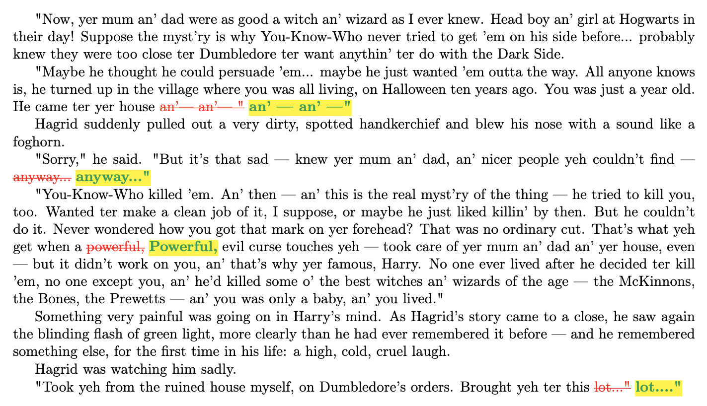

How much do open-weight LLMs memorize specific books?
There's currently an enormous (and growing) amount of litigation involving authors, publishers, and AI companies over training large language models (LLMs) on copyrighted text. These cases involve many issues, but a recurring theme is that LLMs sometimes reproduce text from their training data in their outputs, including exact (or near-exact) passages from copyrighted books. When a model reproduces its training data like this, that tells us something about the model itself: not only has it produced a copy of that data at generation time, but that data is also encoded inside the model in some form. The AI research community refers to this as memorization.
How much LLMs memorize their training data is a central question, both for copyright lawsuits and for AI research more broadly. But most technical work that measures memorization doesn't address the questions that matter most for copyright. It tends to measure memorization over random samples of all the training data to estimate average memorization rates, yet copyright is about specific works. So the copyright-relevant question is: how much of a particular book has a particular LLM memorized?
This is exactly the question we study. We measure how much of 200 books from the Books3 corpus (a common LLM pretraining dataset) a range of open-weight (non-chatbot) models have memorized. We design a specific measurement procedure, and find that the answer varies enormously. (This matters, because our memorization claims depend entirely on that procedure: changing it — using longer prompts or counting near-exact matches — can surface even more memorization.)
Memorization varies across books and models
Across the models we test, most books are barely memorized; but some are memorized in part, and, surprisingly, a few are memorized almost in their entirety. Figure 1 gives a sense of our results, for one book (George Orwell's Nineteen Eighty-Four) under one model (Llama 3.1 70B).
![Scatterplot of sequences drawn from George Orwell's Nineteen Eighty-Four. Every dot shows the sequence's extraction probability under Llama 3.1 70B, plotted at its unique start-character position in the book, with color intensity reflecting the probability on a log scale (white for no extraction, pale for low, and dark for high). There are high extraction probabilities throughout the book. We also indicate with a horizontal line and shaded region above it which sequences have probabilities surpassing 25%.](assets/landing/1984-llama-3.1-70b-scatter.png)
In the scatterplot, each dot is a sequence of text from Nineteen Eighty-Four (a 50-token chunk). Its height is that sequence's extraction probability: we give the model the 50 tokens just before it as a prompt, and measure the probability that the model reproduces the sequence exactly. Extraction is the observable signal we use in our measurements: when the model can reproduce a sequence exactly, that's evidence of memorization in the model. A dot's horizontal position reflects where its sequence sits in the book, so altogether the scatterplot shows where and how strongly the book is memorized, from beginning to end.
The intensity of a dot's color, like its height, also shows the extraction probability. White means the model never reproduces the sequence (0%), and darker means a higher probability. For instance, a dot at 25% means that one out of every four times you prompt the model with the given 50 tokens from the book, it returns the next 50 tokens verbatim. We mark the sequences above 25% extraction probability with a horizontal line and a shaded band above it. (If you want to understand more about how generating text involves probabilities, Tim Lee's excellent blog post about our work walks through it step by step.) From the enormous number of high-probability sequences, we can see Nineteen Eighty-Four is effectively entirely memorized in Llama 3.1 70B.
This 50-token prompt / 50-token continuation setup is standard in memorization research. A 50-token continuation is long enough that an LLM reproducing it exactly is extraordinarily unlikely by chance, so we can be confident it's memorization. We can (and do) make this intuition more formal in the paper by running control experiments on non-training books, where memorization is impossible. (This is also where the 0.1% minimum probability in the colorbars of Figures 1 and 2 comes from: using those controls, we set a minimum probability that we can safely call extraction.)
![A condensed view of the scatterplot for Nineteen Eighty-Four and Llama 3.1 70B. We show a heatmap that plots the maximum extraction probability at each character, where the maximum is taken over all 50-token suffixes that span that character, using the same log color scale as the scatterplot above. Nearly the entire heatmap is dark, indicating high extraction probabilities throughout the book. Effectively all of the book is memorized by Llama 3.1 70B. (The white regions have no extraction signal; they're an editor's foreword and appendix materials.)](assets/landing/1984-llama-3.1-70b-heatmap.png)
We generally condense results like these into a heatmap, like the one shown in Figure 2. The 50-token sequences we test overlap (which is why the scatterplot shows many dots stacked at nearly the same horizontal position). So any given character in the book actually falls inside several sequences. At each character position, the heatmap plots the maximum (worst-case) extraction probability among the overlapping sequences that span it. Heatmaps make it easy to compare memorization across books for the same model, or across models for the same book (which you can explore for all 200 books and 14 models we test).
Most book–model combinations reveal far less memorization than this. Many of the heatmaps are almost entirely (if not completely) white. But quite a few books we tested are entirely memorized inside Llama 3.1 70B, not just Nineteen Eighty-Four. The most memorized book in our experiments was Harry Potter and the Sorcerer's Stone. It has effectively 100% extraction probability at all positions in the book.
Generating an entire memorized book
So we tested whether we could get the model to generate the whole book. The experiment we ran is very simple (see the paper for full details), but the basics are that we gave Llama 3.1 70B the first few words of Harry Potter ("Mr. and Mrs. D…") and then let it continue from there. And the model produced a nearly identical copy of the whole ~300-page book.


And when we say nearly identical, we mean it. Figure 3 shows two parts of the generation from the model, compared against the real book with (very minor) differences called out: struck-through red for original book text that Llama 3.1 70B missed in the generation, yellow-highlighted for what it produced instead. And these differences are trivial: a punctuation mark, a capitalized letter, or an Americanized spelling (the British "Mum" becomes "Mom"). We also measure this quantitatively, and find that the generation and the real book are a 99.2% match (full details on how we compute this are in the paper).
Copyright implications
These results have significant implications for the ongoing copyright lawsuits, and they don't unambiguously favor either plaintiffs or defendants. We highlight three.
First, a model that has memorized a book could itself count as a copy (or derivative work) of that book. Second, that copy could be infringing, or fair use might apply. But the fair use analysis for the model is different from the fair use analysis for the training data. Third, these cases seem poorly suited for class actions. To be certified, a class action requires all class members to share common legal and factual issues, as well as suffer common injuries. But our results show that memorization varies across books, across authors, and even across books by the same author, so it isn't clear a class action is the right fit.
Please check out the paper for more details.
How to cite our work
@article{cooper2025books,
title = {Extracting memorized pieces of (copyrighted) books from open-weight language models},
author = {Cooper, A. Feder and Lemley, Mark A. and Casasola, Allison and Ahmed, Ahmed and
Gokaslan, Aaron and Cyphert, Amy B. and De Sa, Christopher and Ho, Daniel E. and Liang, Percy},
journal = {arXiv preprint arXiv:2505.12546},
year = {2025}
}
In the news

Explore all 200 books
Search for a title or author, filter by copyright status or how the book was selected, and sort by how much of the book is detected as memorized with our extraction procedure. Open a book to see its extraction-by-location heatmaps, extraction coverage, and extraction-probability distributions for different models.